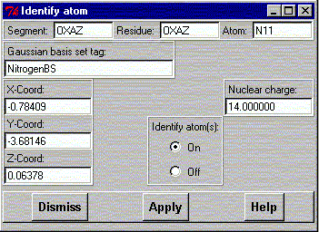

**************************************************************************
Identify atom widget
Leif Laaksonen CSC 1996
**************************************************************************
This widget enables the user to click on an atom and identify the full properties for that atom.
Normally pressing the left mouse button and moving the mouse rotates the molecular system and pressing the right mouse button and moving the mouse zooms the molecular system.
Clicking the "Identify atom(s)" state to on turns the left mouse button to a pointer into the molecular system. Move the arrow over an atom and press the left mouse button and the widget will be filled with atom information about the that particular atom.

Line command: see No line command available
**************************************************************************
LUL/1996
**************************************************************************